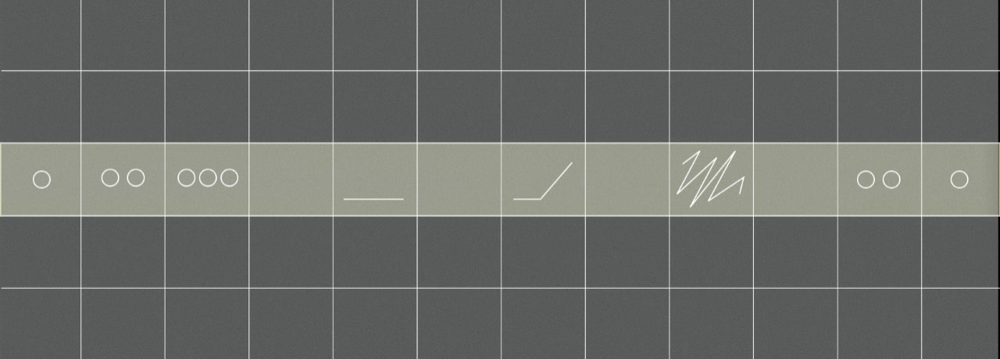
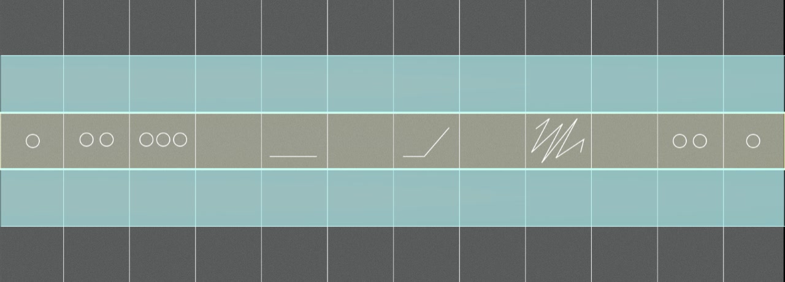
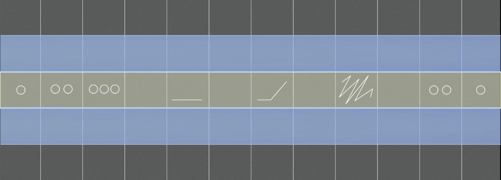
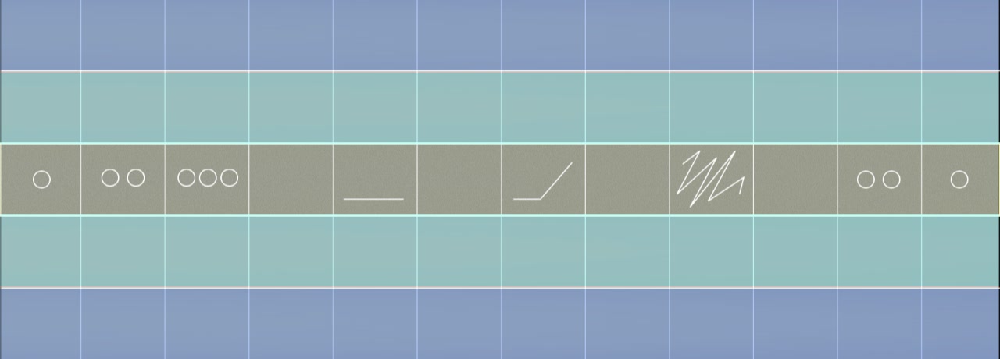
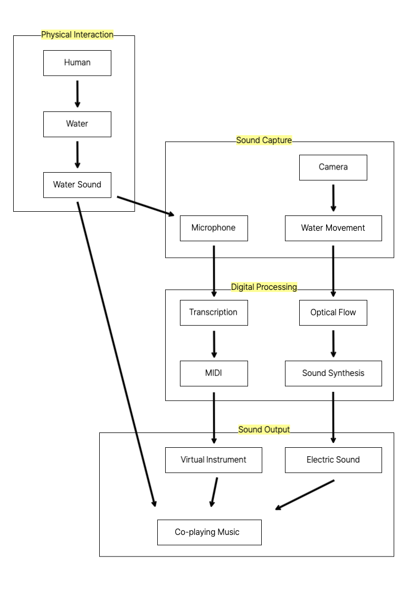
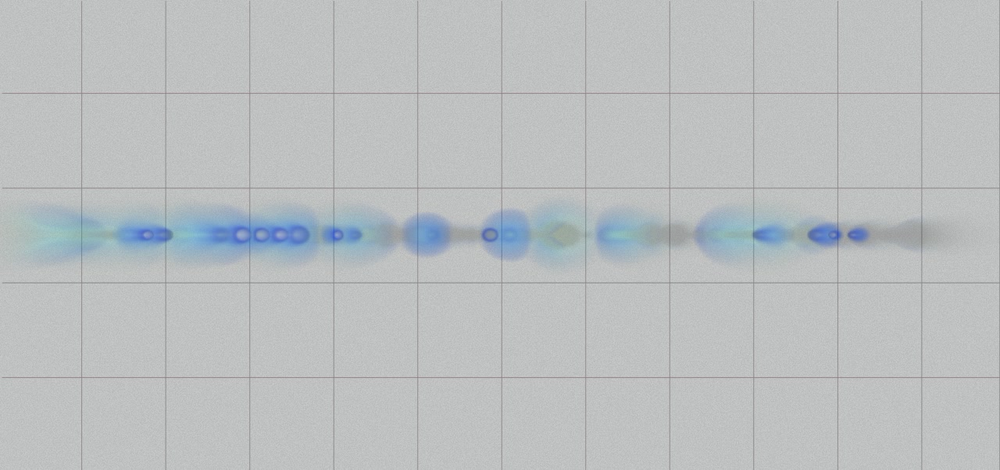

Composition
1st Movement: Human Action
A person breathes into the water.
2nd Movement: Machine Vision
The machine observes changes in the water and produces sound.
3rd Movement: Machine Hearing
The machine listens to changes in the water and produces sound.
4th Movement: Human & Machine Co-Playing
The human and the machine perform together.
Score
All movements are performed using the same score.
1st movement.
2nd movement.
3rd movement.
4th movement.
Sound Logic
#1. Water Sound
The actual sound of water is transmitted via a microphone.

#2. Sound Synthesis
The information about water movement obtained through optical flow affects volume, frequency, and reverb amount.

When blowing into water with a straw, a "bubbling" sound is produced. When dropping water with a pipette, a "droplet" sound is produced.

Sound 1: Bubbling Water
- Control
- Toggle ON/OFF with key '1'
- Sound Design
- Uses "water-bubbles.wav" sample
- Digital reverb (NRev, 0.15 mix)
- Delay line (800ms) with feedback loop
- Interaction Response
- Movement increases gain amplitude
- Adjusts echo mix (0.4 to 0.6)
- Controls reverb mix (0.15 to 0.3)

Sound 2: Water Drops
- Control
- Toggle ON/OFF with key '2'
- Sound Design
- Uses "water-drop.wav" sample
- FM synthesis with 120Hz sine oscillator
- Low-pass filter (1200Hz)
- Randomized playback rate (0.8-1.2)
- Interaction Response
- Controls drop trigger frequency
- Adjusts individual drop intensity
- Modulates background tone gain
#3. Transcription - MIDI to Audio
The pitch of the actual water sound is transcribed and converted into a virtual instrument sound.
